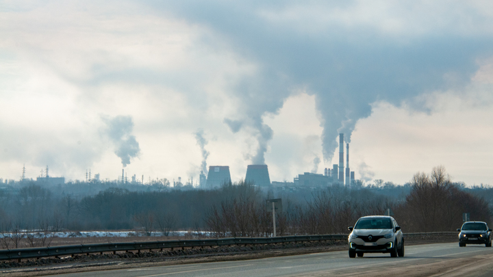

ㅤㅤㅤ ㅤㅤㅤ-Көлік: Автокөліктер, автобустар және басқа да көлік түрлері, әсіресе ішкі жану қозғалтқыштары барлары, көмірқышқыл газы (CO2), азот оксидтері (NOx) және көміртек тотығы (CO) сияқты зиянды заттарды ауаға шығарады.
ㅤㅤㅤӨнеркәсіп: Зауыттар мен фабрикалар атмосфераға күкірт диоксиді (SO2), азот оксидтері және шаң-тозаң бөлшектері (PM2.5 және PM10) сияқты зиянды заттарды шығарып, ауаны ластайды.
ㅤㅤㅤҚазба отынын жағу: Көмір, мұнай және газды пайдаланатын электр станциялары парниктік газдар мен басқа да ластаушы заттарды шығарады.
ㅤㅤㅤАуыл шаруашылығы: Тыңайтқыштар мен пестицидтерді қолдану, сондай-ақ мал шаруашылығынан бөлінетін метан ауаның ластануына әсер етеді.
ㅤㅤㅤТұрмыстық көздер: Отын жағу, сондай-ақ тұрмыстық химиялық заттарды пайдалану жергілікті деңгейде ауаны ластай алады.
ㅤㅤㅤТабиғи көздер: Орман өрттері, жанартау атқылаулары және шаңды дауылдар да ауаның ластануына әкелуі мүмкін.
ㅤㅤАуаның ластануының салдары:
ㅤㅤㅤ ㅤㅤㅤ-Денсаулық үшін: Ластанған ауа демікпе, бронхит, өкпе рагы, жүрек-тамыр ауруларын тудырады. Ұзақ мерзімді әсер адамның өмір сүру ұзақтығын қысқартады.
ㅤㅤㅤ-Экожүйелер үшін: Ауаның ластануы өсімдіктерге, орман мен су экожүйелеріне зиян келтіріп, қышқыл жаңбырлар тудыруы мүмкін, бұл ғимараттар мен топырақты бүлдіреді.
ㅤㅤㅤ —Климаттың өзгеруі: Көмірқышқыл газы мен метан сияқты ластаушылар ғаламдық жылынуға және климаттың өзгеруіне әкеледі, бұл табиғи апаттардың көбеюіне, теңіз деңгейінің көтерілуіне және басқа да күрделі мәселелерге әкеледі.
ㅤㅤㅤ-Ауыл шаруашылығы: Тыңайтқыштар мен пестицидтерді қолдану, сондай-ақ мал шаруашылығынан бөлінетін метан ауаның ластануына әсер етеді.
ㅤㅤㅤ —Экономикалық және эстетикалық салдары: Ластану көріністі нашарлатып, қалалардың тартымдылығын төмендетеді, ауыл шаруашылығына зиян тигізіп, денсаулыққа байланысты үлкен шығындарға әкеледі.

ㅤㅤАуаның ластануын шешу жолдары:
ㅤㅤㅤ ㅤㅤㅤ-Таза энергияны пайдалану: Күн, жел, су және геотермалды энергия сияқты жаңартылатын энергия көздеріне көшу көмірқышқыл газының және басқа зиянды заттардың шығарындыларын азайтады. Алайда бұл технологиялар қымбат және олардың қолданылуы кейбір аймақтарда шектеулі болуы мүмкін.
ㅤㅤㅤ-Энергия тиімділігін арттыру: Энергия тиімді құрылыс және технологияларды қолдану энергия шығынын азайтып, ауаны ластауды төмендетеді. Бірақ бұл шаралар тек ұзақ мерзімді нәтижелер береді.
ㅤㅤㅤ —Таза көлік: Қоғамдық көлік, электр көліктері мен велосипед инфрақұрылымын дамыту көмірқышқыл газын азайтуға көмектеседі. Бірақ көліктердің толық ауысуы көп уақытты талап етеді.
ㅤㅤㅤ-Заңнамалық шаралар: Үкіметтер зауыттар мен көліктердің шығарылымдарына қатаң стандарттар енгізіп, ауаның сапасын бақылау бағдарламаларын іске асыруы қажет. Алайда бұл әрқашан экономикалық дамуға кедергі келтірмеуі керек.
ㅤㅤㅤ —Қалаларды көгалдандыру: Қалаларда ағаш отырғызу және жасыл аймақтарды көбейту ауаның сапасын жақсартуға көмектеседі. Дегенмен, бұл шаралар барлық ластану көздерін толықтай жоя алмайды.
ㅤㅤㅤ —Химиялық заттарды қолдануды азайту: Ауыл шаруашылығында экологиялық таза әдістерді қолдану, тыңайтқыштар мен пестицидтерді азайту ауаның ластануын азайтады. Бірақ мұндай әдістер кейде өнімділікке теріс әсер етуі мүмкін.